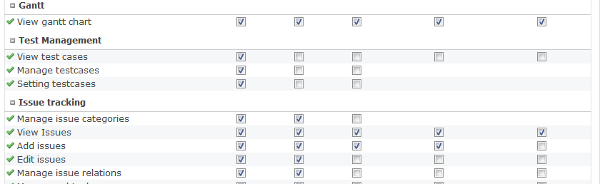

The redmine plugin for test management.
If you use Redmine 1.x
cd vendor/plugins or if you use Redmine 2.x,
cd plugins And clone the source from GitHub.
git clone https://github.com/kawasima/redmine_impasse.git Finally, execute migration.
rake db:migrate_plugins
Select Administration -> Roles and permissions menu and grant permission to the roles.
